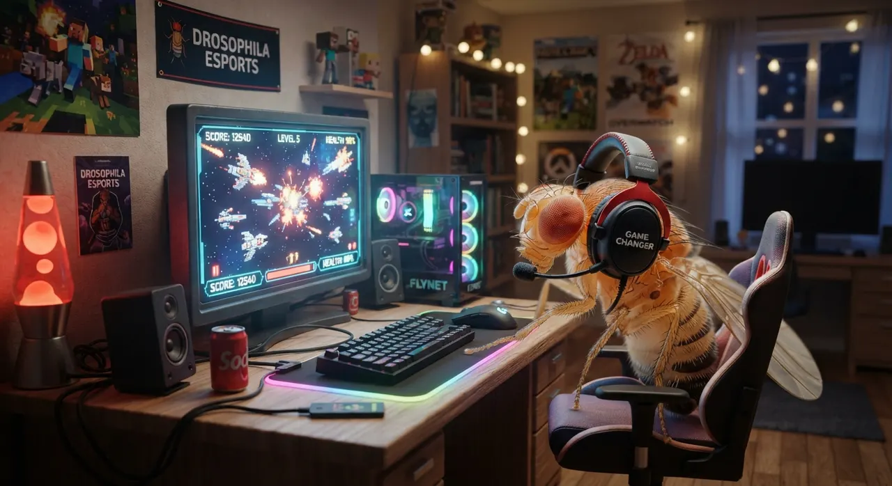

Projetos selecionados
05 PROJETOSSistema de
atendimento
App desktop que fiz pra uma clínica odontológica de Águas Claras. Um bot responde o WhatsApp da clínica e o painel junta conversas, agenda, documentos e orçamentos. Os dados ficam num SQLite local, os documentos dos pacientes são cifrados com AES-256-GCM e cada versão nova sai pelo GitHub Actions pra Windows e Linux, com atualização automática.
// o bot NUNCA informa preço, só o dentista
for (const arq of bots) {
const src = fs.readFileSync(arq, 'utf8')
assert(!/R\$\s*\d/.test(src))
}
✓ OK: nenhum preço hardcoded nos bots
Mirantes
do Lago
Site de um loteamento na beira do reservatório de Queimado, em Palmital de Minas (MG). Refiz o mapa 3D em cima da planta do cartório: 83 lotes, as ruas, as áreas verdes e a ilha na frente, tudo em Three.js. O formulário leva o interessado direto pro WhatsApp do corretor.

Mapa 3D
Mods de
Isaac
Dois mods de The Binding of Isaac publicados na Steam Workshop. O Enemy Drop Loot faz inimigo derrubar item e pickup, com limite por sala depois que um jogador reclamou de farm nos comentários. O QoL Kit junta num mod só vários consertos e ajustes que a comunidade usava separados, com os bugs de cada um corrigidos. O youtuber Back To The Basement gravou vídeo do Enemy Drop Loot.

Fly
Reflex
Peguei o conectoma real da mosca-das-frutas (FlyWire) e simulei 668 neurônios a 1 kHz pra ela jogar Friday Night Funkin' sozinha. O cérebro dela aparece ao vivo numa janela por cima do jogo. No chart de teste ela acerta 26 de 26 notas. No jogo de verdade ainda estou calibrando.

✓ 668 neurônios · ~19k sinapses reais
✓ simulação LIF a 1 kHz
→ KEYBOARD: YOURS
F9 arma a mosca · qualquer tecla devolve
QA
BRB Card
Fui estagiário de QA no BRB Card de nov/2024 a abr/2026, testando sistema financeiro. Escrevi mais de 80 casos de teste, automatizei fluxos E2E com Cypress, testei APIs com Postman e escrevi cenários BDD em Gherkin.
describe('Login', () => {
it('deve autenticar', () => {
cy.visit('/login')
cy.get('[data-cy=cpf]').type('...')
cy.get('[data-cy=submit]').click()
cy.url().should('include', '/dashboard')
})
})